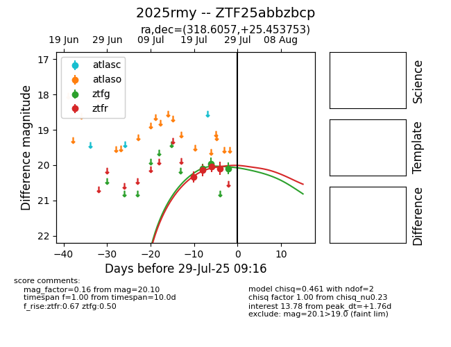

Target 2025rmy at 2025-07-29 09:16, see:
FINK: fink-portal.org/2025rmy
Lasair: lasair-ztf.lsst.ac.uk/objects/2025rmy
ALeRCE: alerce.online/object/2025rmy
TNS: wis-tns.org/object/2025rmy
YSE: ziggy.ucolick.org/yse/transient_detail/2025rmy
alt names
ZTF25abbzbcp (ztf,fink)
2025rmy (tns,yse)
coordinates:
equatorial (ra, dec) = (318.6057,+25.45375)
galactic (l, b) = (73.3020,-15.87182)
photometry
last ztfg=20.10, ztfr=20.09
3 ztfg, 4 ztfr detections
